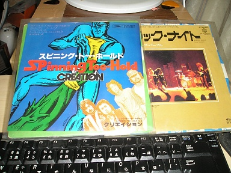

2012 年
03 月 10 日 ( 土 )
見つけたどぉ〜

うぉっ！！発掘した！！見つけた！！足元にあった！！言ってることがわかんないと思うけど、ともかく灯台下暗しで部屋のなかでみつけた！！20 年気付かなかった！！あほや！！でもプレイヤーがない！！どうしよう！！
- Category :
- 日記
71 さんの新作
これまたツボにくる 71 さんの作品。ライブ感というか空気感がすごくいいですよね。
- Category :
- 71
- pixiv
- イラスト
中坊っぽい会話
今日は某所でこのサイトのローカル側の HTML ファイルを Firefox で眺めていたのですが、スネアのあたりのところを眺めていると「ミスチルやりません？」と以前オファーを打診してきたとある人に、なんかいろいろ訊かれました。それで某所のドラム・セットのことやら、なんでこういうセッティングにするのやら、いろいろ説明していたのですが．．．．．
「そのドラムは Pearl ですか？」
と突然今日初対面の人が話しかけてきました。
ポプラちゃんは Pearl ではないので
「いえ、TAMA ですよ」
と答えたところ突然
「村上ポンタ秀一って知ってます？」
と訊いてくるので
「もちろんです。日本のドラマーにとっては神様みたいな人です。個人的にはポンタさん、力哉さん、神保さんは ( 以下話が超長くなるので省略 )」
それで会話も長くなるので省略するわけですが、こういった会話の流れに懐しさを感じました。
「○○知ってる？」「ほんなら○○さんの○○ってアルバム知ってる？」
これって中学生、高校生の頃の「お前、こんなん知ってる？こんなんどう思う？」という布教活動に似てるわけですよ。
相手の話してた内容に関する ( それ遠州つばめ返しだよ、とかの突っ込み ) コメントは差し控えますが、楽しい時間を過ごさせていただきました。
- Category :
- 日記
音のこと
音は正直だ。ごまかしはきかない。全て音にでてしまう。だから音に耳をかたむけ、音に謙虚であろう。
- Category :
- 日記
車載ドラム
flickr でみつけた謎のおじさん。自分もおじさんだけど。
なんで車の外じゃなく中で叩いてるんだろう。東京恐るべし。

- Category :
- 写真